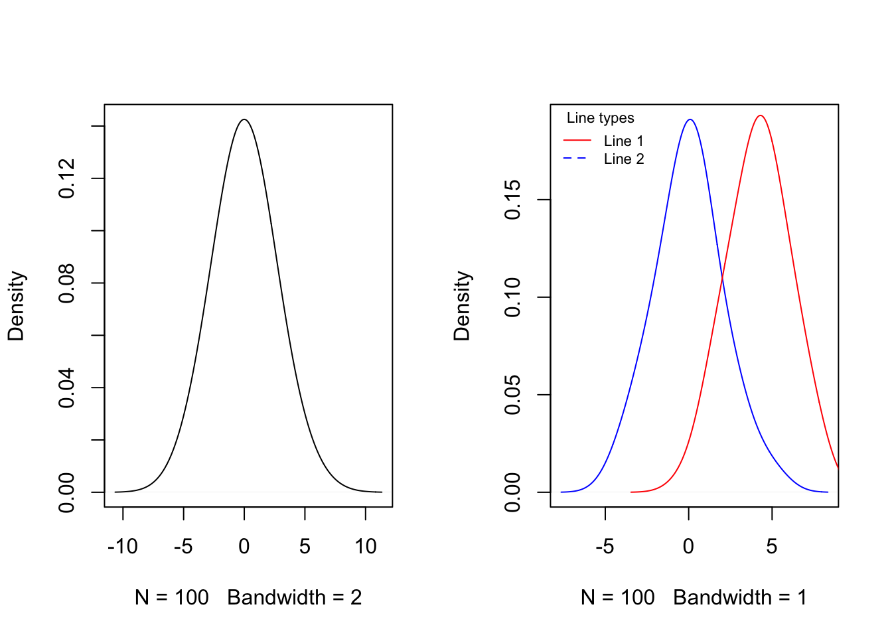
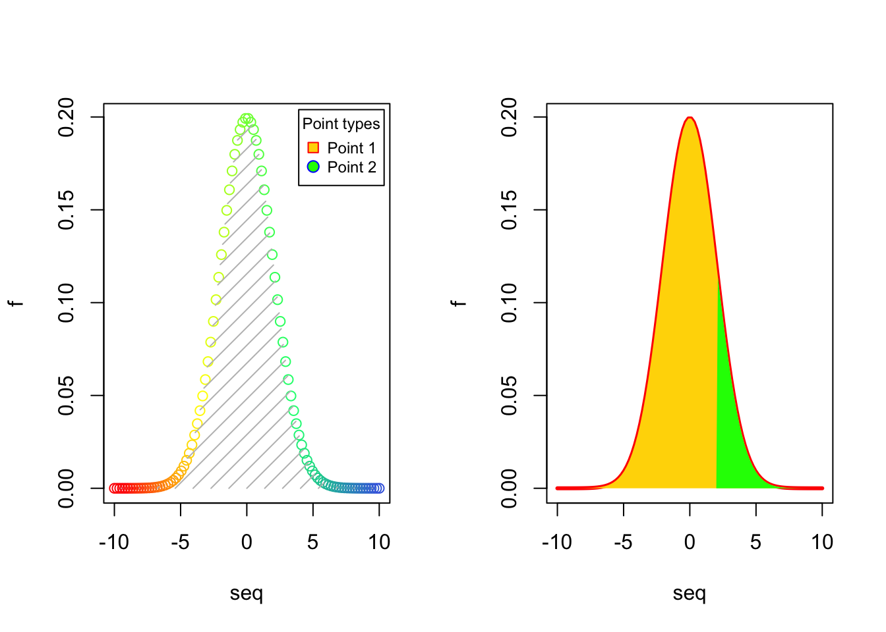
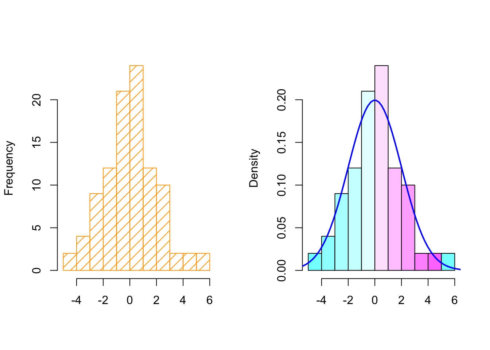
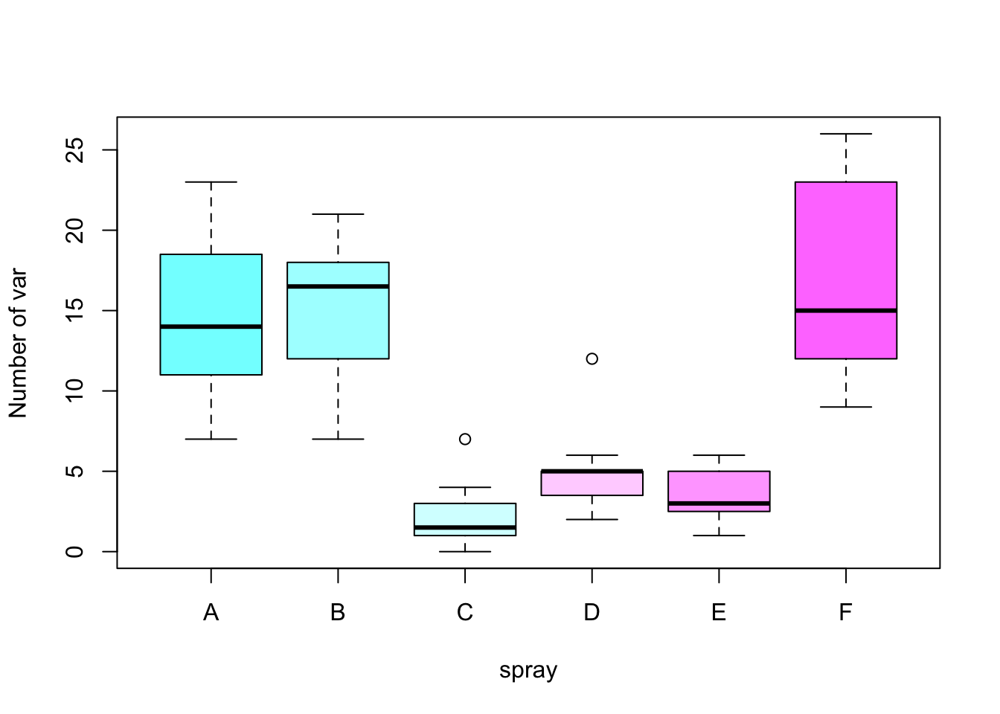
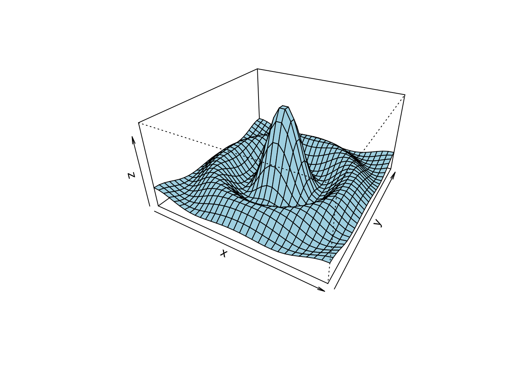

Basic graphics in R
R is a great tool for creating plots, maps and graphics. R includes many built-in graphics functions that would help to draw plots easily. R is a very self explanatory environment in terms of documentation. We can learn about any R commands only by using help(command). The following is a list of the most practical graphics functions in R:
plot: Generic function for plotting of R objectslines: A generic function taking coordinates and joining the corresponding points with line segmentsablines: This function adds one or more straight lines through the current plotpoints: A generic function to draw a sequence of points at the specified coordinatespanel.smooth: Simple panel plotsmoothScatter: Produce a smoothed color density representation of a scatterplot,pairs: Produce a matrix of scatter plotshist: Computes a histogram of the given data valuesacf: Computes (and by default plots) estimates of the autocorrelation functionboxplot: Produce box-and-whisker plot(s) of the given (grouped) valuesbarplot: Creates a bar plot with vertical or horizontal barsdotchart: Draw a Cleveland dot plotpie: Draw a pie chartpolygon: Polygon draws the polygons whose vertices are given in x and ysymbols: This function draws symbols on a plotarrows: Add arrows to a plotaxis: Add an axis to a plotstars: Draw star (segment) plots and spider (radar) plotscontour: Create a contour plot, or add contour lines to an existing plotimage: Creates a grid of colored or gray-scale rectangles with colors corresponding to the values in zpersp: This function draws perspective plots of a surface over the x–y plane
There are several graphical parameters that can be specified in the graphics functions or through parameter function, par(), before the graphs. Most important graphical parameters:
ann: Plots annotations which is axis titles and overall titles,ann = FALSEmeans no titlesbg: Background colorbty: Border type,bty = "n"means border type is NULLcex: A value giving the amount which plotting text and symbols should be magnified relative to the defaultlas: Labels axis stylelty: Lines typeslwd: Lines widthmain: Plot main titlemfrow: Multiple figures in rows, it is a vector of the formc(nr,nc)pch: Points characterxaxt/yaxt: X-axis/y-axis style,xaxt = "n"means no scale on x-axisxlab/ylab: X-axis/y-axis labelxlim/ylim: X-axis/y-axis limit
This tutorial shows how to apply above functions and parameters to draw graphs by R. We will also, briefly learn how to generate publication style tables and maps.
Scatter plots, lines and points
x = 1:100
y = rnorm(100, 0, 2)
## Left plot
par(mfrow = c(1,2))
plot(x, y, las = 1, xaxt = "n")
axis(1, at = c(0,25,50,75,100), labels = c('O','A','B','C','D'))
panel.smooth(x, y, col = "blue")
## Right plot
plot(x, y, type = "l", col = "blue", ylab = "", yaxt = "n", las = 2)
lines(smooth(y), col = "red", lty = 1, lwd = 1.4)
abline(h = 3, v = 80, col = "orange", lwd = 3)
abline(h = 0, lty = 2, lwd = 2)
points(c(20,40,60,80,100), c(0,-1,1,3,2), col = "black", bg = "green", pch = 21, cex = 2)
text(x = c(40,80), y = c(-1.2,3.2), labels = c("MIN","MAX"), pos = c(1,3), col = "red", cex = 0.9)

Probability density functions
par(mfrow = c(1,2))
## Left plot
plot(density(y, bw = 2), main = "")
## Right plot
y2 = rnorm(100, 4, 2)
plot(density(y, bw = 1), col = "blue", main = "")
lines(density(y2, bw = 1), col = "red")
legend("topleft", legend = c("Line 1", "Line 2"), title = "Line types", lty = 1:2, lwd = 1, col = c("red", "blue"), cex = 0.7, box.lty = 0, bg = rgb(0,0,0,0))
## Left plot
seq = seq(-10, 10, length.out = 100)
f = dnorm(seq, 0, 2)
plot(seq, f, col = colorRampPalette(c("red","yellow","springgreen","royalblue"))(100))
legend("topright", legend = c("Point 1", "Point 2"), title = "Point types", pch = c(22,21), col = c("red", "blue"), pt.bg = c("gold", "green"), cex = 0.75, pt.cex = 1.2, box.col = "black", box.lty = 1 , box.lwd = 1, inset = c(0.02, 0.015))
polygon(seq, f, density = 10, col = "gray", border = NA)
## Right plot
plot(seq, f, type = "l", col = "red", lwd = 3)
polygon(seq, f, density = NA, col = "gold", border = NA)
polygon(c(2, seq[seq >= 2]), c(0, f[seq >= 2]), density = NA, col="green", border = NA)
Histograms
par(mfrow = c(1,2))
## Left plot
hist(y, col = "orange", density = 10, main = "", xlab = "")
## Right plot
hist(y, col = cm.colors(10), probability = TRUE, main = "", xlab = "")
lines(seq, f, col = "blue", lty = 1, lwd = 2)
Box plots and autocorrelations
par(mfrow = c(1,2))
## Left plot
boxplot(y, y2, col = c("orange", "gold"))
abline(h = 0)
## Right plot
acf(y, main = "")


Barplots and dotcharts
par(mar = c(5,4,4,6), xpd = TRUE)
barplot(VADeaths, border = "dark blue", col = rainbow(20), cex.axis = 1.3)
legend("topright", legend = c("Group 1", "Group 2", "Group 3", "Group 4", "Group 5"), title = "Group types", fill = c(rainbow(20)), cex = 0.8, box.lty = 0, inset = c(-0.2,0))

eu_data = data.frame(c(1.75,4.5), c(2.8,6.3), c(3.9,6.8), c(4.35,7.2), c(5,8.25), c(5.3,8.8))
colnames(eu_data) = 2012:2017
rownames(eu_data) = c("US","World")
barplot(as.matrix(eu_data), beside = TRUE, ylab = "Million metric tons", ylim = c(0,10), las = 1, col = gray.colors(2))
legend("top", c("US","World"), fill = gray.colors(2), horiz = TRUE, bty = "n")


Matrix of scatter plots
pairs(iris[1:4], lower.panel = panel.smooth, upper.panel = NULL, cex = 0.75, cex.labels = 1.5, col = c("red", "blue", "green")[iris$Species], main = "Iris Data - 3 species")

pairs(~Sepal.Length + Petal.Length + Species, data = iris, subset = iris$Sepal.Length < 7 , main = "Sepal Length < 7", col = rainbow(length(levels(iris$Species)))[iris$Species])

Hierarchical clustering

Time series
ts_data = ts(matrix(rt(300*2, df = 3), 300,2), start = c(1961, 1), frequency = 12)
plot(ts_data, main = "Time series")

Draw functions
For instance we can draw y = 4sin(x) + (1 − cos(x)) by:
f = function(x) {
return(4 * sin(x) + (1 - cos(x)))
}
a = c()
seq_ = seq(-2*pi, 2*pi, len = 1000)
for (x in seq_) {
a = c(a,f(x))
}
plot(x = seq_, y = a, type = "l", xlab = "x", ylab = "y", col = "red")
lines(x = seq_ + 0.5, y = a, col = "blue")

For another example let’s draw a Ergodic mean plots:
par(mfrow = c(1,1))
ErgodicMean = function(x, n) {
quantile_ = matrix(0,n,3)
for (i in 1:n) {
quantile_[i,] = quantile(x[1:i], probs = c(0.5,0.025,0.975))
}
plot(quantile_[,1], ylim = c(min(quantile_),max(quantile_)), type = "l", ylab = "")
lines(quantile_[,2], lty = 2, col = "red")
lines(quantile_[,3], lty = 2, col = "blue")
}
y = rnorm(100, 0, 2)
ErgodicMean(y, 100)

Symbols and stars
par(bty = "n", xaxt = "n", yaxt = "n", ann = FALSE)
symbols(c(0,6), c(2,8), circles = c(2,2), inches = FALSE, bg = c("green", "green"), xlim = c(-2,8), ylim = c(0,10), asp = 1)
symbols(c(0,6), c(8,2), squares = c(4,4), inches = FALSE, bg = c("blue", "blue"), add = TRUE)

stars(mtcars[, 1:7], len = 0.8, key.loc = c(12, 1.5), main = "Motor Trend Cars", draw.segments = TRUE)

Contour, image and perspective
## Persian Rug Art (R user manual example)
x = y = seq(-4*pi, 4*pi, len = 27)
r = sqrt(outer(x^2, y^2, "+"))
par(mfrow = c(2,2), mar = rep(0, 4), xpd = FALSE)
for(f in pi^(0:3)){
contour(cos(r^2)*exp(-r/f), drawlabels = FALSE, axes = FALSE, frame = TRUE)
}


x = y = seq(-10, 10, length = 30)
f = function(x, y) {r = sqrt(x^2 + y^2); 10 * sin(r)/r}
z = outer(x, y, f)
z[is.na(z)] = 1
persp(x, y, z, theta = 30, phi = 30, expand = 0.5, col = "lightblue")
Tables
In R we can use kable function from knitr library to print tables in HTML or LaTeX formats. kable is a great tool, but the generated outputs are usually not formatted for including in reports. While building Markdown or Latex reports it will be useful to use the following packages to make them more publication quality:
For example:
library(knitr)
library(kableExtra)
cardata = mtcars
kable(head(cardata), format = "html", caption = "Title of the table") %>%
kable_styling(full_width = FALSE, font_size = 16, position = "center") # position: left, center, right, float_left and float_right| mpg | cyl | disp | hp | drat | wt | qsec | vs | am | gear | carb | |
|---|---|---|---|---|---|---|---|---|---|---|---|
| Mazda RX4 | 21.0 | 6 | 160 | 110 | 3.90 | 2.620 | 16.46 | 0 | 1 | 4 | 4 |
| Mazda RX4 Wag | 21.0 | 6 | 160 | 110 | 3.90 | 2.875 | 17.02 | 0 | 1 | 4 | 4 |
| Datsun 710 | 22.8 | 4 | 108 | 93 | 3.85 | 2.320 | 18.61 | 1 | 1 | 4 | 1 |
| Hornet 4 Drive | 21.4 | 6 | 258 | 110 | 3.08 | 3.215 | 19.44 | 1 | 0 | 3 | 1 |
| Hornet Sportabout | 18.7 | 8 | 360 | 175 | 3.15 | 3.440 | 17.02 | 0 | 0 | 3 | 2 |
| Valiant | 18.1 | 6 | 225 | 105 | 2.76 | 3.460 | 20.22 | 1 | 0 | 3 | 1 |
fm = lm(mpg ~ cyl + disp + hp, data = cardata)
sm = round(summary(fm)$coef,3)
# Adding some cosmetic to columns that we want
row.names(sm) = cell_spec(row.names(sm), "html", bold = TRUE)
sm[,4] = cell_spec(sm[,4], "html", color = ifelse(sm[,4] < 0.1, "red", "black"))
kable(sm, "html", escape = F) %>%
kable_styling(bootstrap_options = "hover", full_width = FALSE, font_size = 16, position = "center")| Estimate | Std. Error | t value | Pr(>|t|) | |
|---|---|---|---|---|
| (Intercept) | 34.185 | 2.591 | 13.195 | 0 |
| cyl | -1.227 | 0.797 | -1.54 | 0.135 |
| disp | -0.019 | 0.01 | -1.811 | 0.081 |
| hp | -0.015 | 0.015 | -1.002 | 0.325 |
Maps
R does not have default functions for drawing maps and shapefiles. To generate maps, we can use the following packages:
- maps: draw lines and polygons as specified by a map database
- sf: provide Simple Features for R. Find more details about sf in here and in the cheetsheet
- leaflet: create interactive maps. The widget can be rendered on HTML pages generated from R Markdown, Shiny, or other applications. You may learn more about leaflet in here
Layout
layout creates a layout for putting multiple plots together. Number of rows and columns are specified in a matrix, with the column-widths and the row-heights specified in the respective arguments.
lay = layout(matrix(c(1,0,2,3,4,0),3,2,byrow = TRUE), widths = c(4,1.5), heights = c(1.5,4,1), respect = TRUE)
layout.show(lay)

x = pmin(3, pmax(-3, rnorm(100)))
y = pmin(3, pmax(-3, rnorm(100)))
xhist = hist(x, breaks = seq(-3,3,0.5), plot = FALSE)
yhist = hist(y, breaks = seq(-3,3,0.5), plot = FALSE)
top = max(c(xhist$counts, yhist$counts))
par(mar = c(0,3,3,1))
plot(xhist, col = "gray", axes = FALSE, xlab = "", ylab = "", main = "")
title(main = "Main Title", cex.main = 1.5)
par(mar = c(4,3,1,1))
plot(x[1:15], y[1:15], xlim = c(-3, 3), ylim = c(-3, 3), xlab = "x variable", ylab = "", cex.lab = 1.2)
arrows(x[1:15], y[1:15]-0.5, x[1:15], y[1:15]+0.5, col = 4, angle = 90, length = 0.05, code = 3)
par(mar = c(3,0,1,1))
barplot(yhist$counts, axes = FALSE, xlim = c(0, top), space = 0, horiz = TRUE, col = "black", bg = "gray", density = 20)
par(mar = c(0,3,0,0))
plot.new()
legend("center", legend = c("Top", "Middle", "Right"), fill = c("gray", "white", "black"), density = c(-1,-1,40), bg = "gray90", horiz = TRUE)

Color palettes
R also offers the following built in color palettes that help to generate color vectors of desired length quickly.
rainbow()colorRampPalette()heat.colors()gray.colors()terrain.colors()topo.colors()cm.colors()
par(mfrow = c(1,2))
pie(rep(1, 24), col = rainbow(24), radius = 1)
pie(rep(1, 24), col = colorRampPalette(c("red","yellow","springgreen","royalblue"))(24), radius = 1)

pie(rep(1, 24), col = heat.colors(24), radius = 1)
pie(rep(1, 24), col = terrain.colors(24), radius = 1)